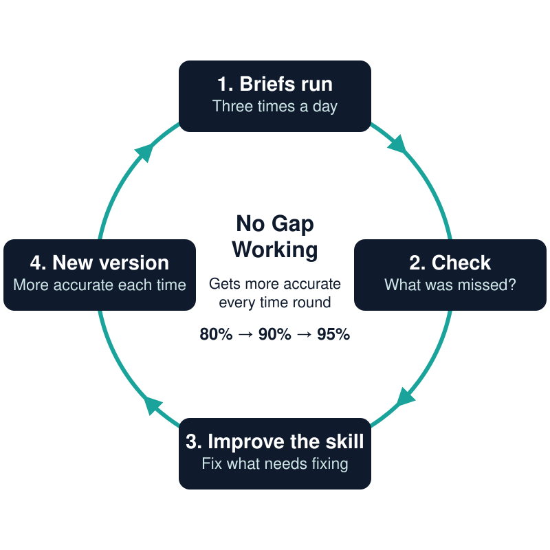

What is No Gap Working? How I stop things falling between the gaps
No Gap Working is how I set Claude up to check in on your business three times a day: morning, midday and end of day. Each time, it sweeps up what has come in and what needs you. Because it already knows your files, it can tell an urgent message from a routine one. The aim is that next to nothing falls between the gaps.
Where do the gaps come from?
A gap is the thing nobody is looking at: the email that got buried, the follow-up you meant to send. If you run a small business, you'll know them well. They open up in the hours when you're busy doing the work you're paid for.
I have a busy day job, and MPAI runs alongside it, so I know the gaps well.
How does No Gap Working fill them?
It's built from skills and scheduled tasks, which I explain in my post on Claude skills. Put together, they give you a brief at three points in the day:
- In the morning, the shape of your day, who is waiting on you and what needs doing first.
- At midday, what has moved since the morning and what still needs you today.
- At the end of the day, what got done, what's still open and your first moves for tomorrow.
Each brief draws on what Claude knows about your business, including how you like things done, so it can pick out the messages that matter and leave the rest for later.
Talking it through
I'm pairing the briefs with voice chat, especially the morning one. You read the brief, then talk it through with Claude before you head out. Ask it to chase an invoice on Thursday or remind you to ring someone after lunch, and it schedules that for later in the day or later in the week.
How does it get more accurate?
No set-up catches everything on day one, so the skill looks back at its own work. After each round it checks what was missed and what needs improving in the current version. Then it improves itself, and the next version is more accurate than the last.
When I set this up for a business, I'd expect it to be around 80% effective at the start. Each time round the loop moves it on, towards 90%, then 95%, and as close to foolproof as I can get it. Every business works differently, so every set-up is bespoke.

Where it's going next
I'm taking the same idea beyond the daily briefs. Next up is outreach, so new leads are followed up on time, and onboarding new clients, so nothing gets missed in those first few weeks.
If you'd like to see what No Gap Working would look like in your business, get in touch.